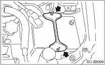

STARTING/CHARGING SYSTEMS(H4SO) > Battery
REMOVAL
1. Disconnect the positive (+) terminal after disconnecting the negative (−) terminal of battery.
2. Remove the flange nut from battery rod and remove battery holder.

3. Remove the battery.